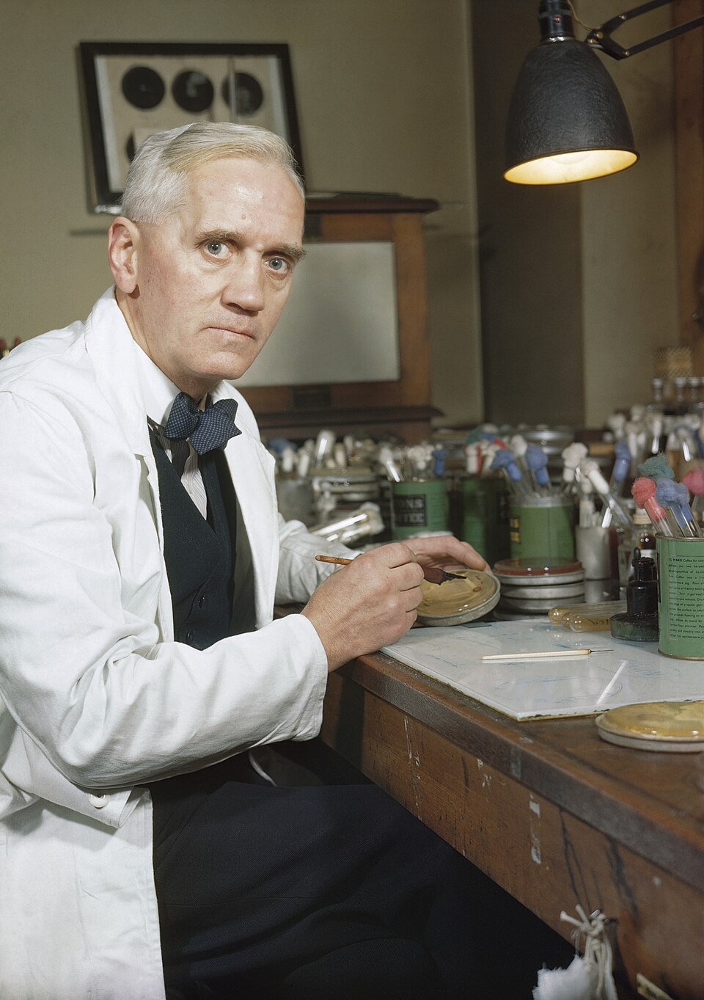

Un moho caído del aire mata a los microbios: el hallazgo accidental del doctor Fleming
De vuelta de sus vacaciones, el bacteriólogo del hospital St. Mary encontró una de sus placas de cultivo invadida por un hongo alrededor del cual los estafilococos habían muerto. Donde otro hubiera visto un experimento arruinado, él vio una pregunta.

La escena, hay que decirlo, no tuvo nada de solemne: el doctor Alexander Fleming, bacteriólogo escocés del hospital St. Mary de Paddington, célebre entre sus colegas por el desorden creativo de su mesa de trabajo, regresó esta mañana de sus vacaciones y se puso a revisar la pila de placas de cultivo que había dejado sin lavar. En una de ellas, sembrada de estafilococos, había caído durante su ausencia una espora de moho —un polvillo del aire, un huésped cualquiera— que creció formando una colonia aterciopelada. Lo notable estaba alrededor: en un anillo entero en torno al hongo, los microbios habían sido aniquilados.
«Eso es curioso», dicen que dijo el doctor, que es hombre de pocas palabras, y en lugar de arrojar la placa al lavabo la apartó, la fotografió y tomó muestra del moho. Las primeras pruebas indican que se trata de un hongo del género Penicillium, como el que enmohece el pan, y que el caldo donde crece mata o detiene a varios de los microbios que más muertes cuestan a la humanidad: los de las heridas infectadas, la neumonía, la difteria. Fleming, que en la guerra vio morir de infección a soldados que las balas habían perdonado, persigue desde entonces exactamente esto: un arma que mate al microbio sin matar al enfermo.
El azar eligió bien a su hombre, porque este médico ya fue favorecido una vez y supo verlo: hace años, resfriado sobre una placa de cultivo, descubrió en su propia mucosidad una sustancia que disuelve microbios —la llamó lisozima—, y desde entonces sostiene que las defensas naturales enseñan más que los venenos. La convicción viene de la guerra: en el hospital de campaña de Boulogne comprobó junto a su maestro Wright que los antisépticos heroicos de entonces mataban más tejido vivo que microbios, y que las heridas profundas se reían del arsenal entero. La espora providencial, conjeturan en el hospital, subió flotando desde el laboratorio de un colega del piso de abajo que colecciona mohos; el verano fresco de Londres hizo el resto, criando al hongo y a sus víctimas en el orden justo. La suerte, se ve, también tiene su protocolo.
El hallazgo no arrancó fanfarrias en Paddington: cuando el doctor mostró la placa a sus colegas, la rodearon, dijeron «interesante» y volvieron a sus asuntos, que así recibe la rutina a las revoluciones. Fleming, hombre de club y de piscina, que se entretiene pintando paisajes con microbios de colores sembrados a pincel, guarda la placa original como otros guardan un pagaré: por las dudas. Al caldo del hongo lo bautizó sin ceremonia «penicilina», y ya prepara la comunicación para una revista del ramo. Los ratones y los años dirán el resto; los grandes remedios, como los buenos vinos, parecen necesitar bodega.
La prudencia obliga a moderar el tono: el «jugo de moho», como lo llama su descubridor con humor de escocés, es inestable, difícil de producir en cantidad, y pasarán años antes de que alguien sepa si puede convertirse en medicina de hospital. Puede que el hallazgo duerma en una revista de bacteriología hasta que otros, con más química y más urgencia —una guerra, por ejemplo, sabe crear ambas—, lo despierten. Pero si ese día llega, recuérdese esta mañana de septiembre: la mayor victoria de la medicina habrá empezado con una ventana abierta, una placa sucia y un hombre que en vez de tirar el error se detuvo a mirarlo.